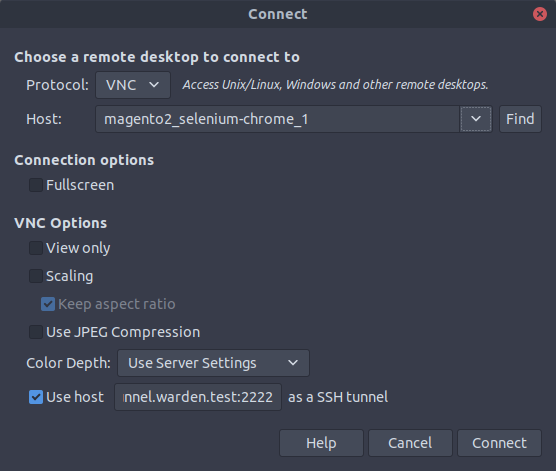
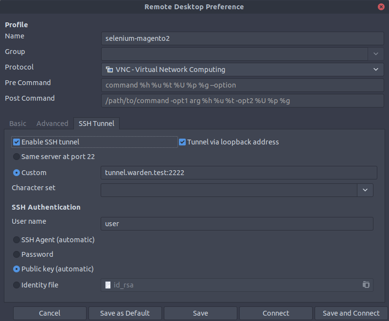

Magento Functional Testing Framework
For information what Magento Functional Testing Framework is - please follow to MFTF DevDocs.
MFTF is part of Magento 2. To run tests you need Selenium instance with Chrome Webdriver. Warden provides Docker setup that contains Selenium Standalone with Chrome. You can enable it by adding the following to the project’s .env file (or exporting them to environment variables prior to starting the environment):
WARDEN_SELENIUM=1
After generating MFTF configuration files (dev/tests/acceptance/.env generated by vendor/bin/mftf setup:env command), you need to provide selenium hostname:
SELENIUM_HOST=selenium
BROWSER=chrome
Running Tests
We provide complex instruction on How to run MFTF Tests in Warden environment.
Debugging MFTF Tests
By default Warden uses headless Chrome browser. If you want to preview the tests - you need to extend .env file and update environment containers (warden env up)
WARDEN_SELENIUM_DEBUG=1
Default password for VNC session is secret
To preview the process of testing, you need any VLC client that provides SSH Tunnel support (eg. Remmina). To preview the process of testing, you need to use tunnel.warden.test:2222 (login: user):
Remote Desktop Viewer

Remmina

Mac OS X
To preview the process in Mac OS X, you must first create an SSH tunnel to the docker instance hosting the VNC server. That would look something like:
ssh -N -L localhost:5901:magento2_selenium_1:5900 tunnel.warden.test
Where 5901 is the port on your local computer you want to use to access the VNC server. Then, using Finder you can “Go > Connect to Server” vnc://localhost:5901.
When you are prompted for the password it is secret.